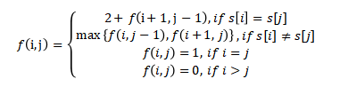

1.最长回文子序列
回文(palindrome)是正序与逆序相同的非空字符串。例如，所有长度为1的字符串、civic、racecar、aibohphobia都是回文。设计高效算法，求给定输入字符串的最长回文子序列。例如，给定输入character，算法应该返回carac。算法的运行时间是怎样的？
答案：对任意字符串，如果头和尾相同，那么它的最长回文子序列一定是去头去尾之后的部分的最长回文子序列加上头和尾。如果头和尾不同，那么它的最长回文子序列是去头的部分的最长回文子序列和去尾的部分的最长回文子序列的较长的那一个。
设字符串为s，f(i,j)表示s[i..j]的最长回文子序列。 则有

由于f(i,j)依赖i+1，所以循环计算的时候，第一维必须倒过来计算，从s.length()-1到0。
最后，s的最长回文子序列长度为f(0, s.length()-1)。
2.整齐打印
考虑在一个打印机上整齐地打印一段文章的问题。输入的正文是n个长度分别为l1，l2，…，ln（以字符个数度量）的单词构成的序列。我们希望将这个段落在一些行上整齐地打印出来，每行至多M个字符。“整齐”的标准如下：如果某一行包含从i到j的单词（），且单词之间只留一个空格，则在行末多余的空格字符个数为 ，它必须是非负值才能让该行容纳这些单词。我们希望所有行（除最后一行）的行末多余空格字符个数的立方和最小。请给出一个动态规划的算法，来在打印机整齐地打印一段又n个单词的文章。分析所给算法的执行时间和空间需求。
答案：构建数组a[i]代表包含1->i单词的最优“整齐度”——空格的立方总和。开始时，令a[0]=0。a[i]的递推式如下：
W[j][i]代表将j到i的单词写入一行时，该行的多余空格数的立方。
每次计算a[i]时，循环j从i-1开始，直到某个j值使得值为负，则跳出。
最终a[n]即为所求的最小立方总和。
3.找零问题
考虑用最少的硬币找n美分零钱的问题。假设每种硬币的面额都是整数。
a)设计贪心算法求解找零问题，假定有25美分、10美分、5美分和1美分4种面额的硬币。证明你的算法能找到最优解。
答案：若n是正整数，则用25美分、10美分、5美分和1美分等尽可能少的硬币找出的n美分零钱中，至多有2个10美分、至多有1个5美分、至多有4个1美分硬币，而不能有2个10美分和1个5美分硬币。用10美分、5美分和1美分硬币找出的零钱不能超过24美分。
证用反证法。证明如果有超过规定数目的各种类型的硬币，就可以用等值的数目更少的硬币来替换。注意，如果有3个10美分硬币，就可以换成1个25美分和1个5美分硬币；如果有2个5美分硬币，就可以换成1个10美分硬币；如果有5个1美分硬币，就可以换成1个5美分硬币；如果有2个10美分和1个5美分硬币，就可以换成1个25美分硬币。由于至多可以有2个10美分、1个5美分和4个1美分硬币，而不能有2个10美分和1个5美分硬币，所以当用尽可能少的硬币找n美分零钱时，24美分就是用10美分、5美分和1美分硬币能找出的最大值。
假设存在正整数n，使得有办法将25美分、10美分、5美分和1美分硬币用少于贪心算法所求出的硬币去找n美分零钱。首先注意，在这种找n美分零钱的最优方式中使用25美分硬币的个数q'，一定等于贪心算法所用25美分硬币的个数。为说明这一点，注意贪心算法使用尽可能多的25美分硬币，所以q'≤q。但是q'也不能小于q。假如q'小于q，需要在这种最优方式中用10美分、5美分和1美分硬币至少找出25美分零钱。而根据引理1，这是不可能的。由于在找零钱的这两种方式中一定有同样多的25美分硬币，所以在这两种方式中10美分、5美分和1美分硬币的总值一定相等，并且这些硬币的总值不超过24美分。10美分硬币的个数一定相等，因为贪心算法使用尽可能多的10美分硬币。而根据引理1，当使用尽可能少的硬币找零钱时，至多使用1个5分硬币和4个1分硬币，所以在找零钱的最优方式中也使用尽可能多的10美分硬币。类似地，5美分硬币的个数相等；最终，1美分的个数相等。
b)假定硬币的面额是c的幂，即面额c0, c1, ... , ck，c和k为整数，c>1，k1。证明：贪心算法总能得到最优解。
答案：同a问，由于c0+ c1+…+ck-1=ck - 1
c)设计一组硬币面额，使得贪心算法不能保证得到最优解。这组硬币面额中应该包含1美分，使得对每个零钱值都存在找零方案。
答案：如果出现一组硬币6，5，1。当遇到10分时，按照贪心算法将分解为6+4*1，而其实为2*5。
d)设计一个O(nk)时间的找零算法，适用于任何k种不同面额的硬币，假定问题包含1美分硬币。
答案：假设m[n]表示找零n美分需要的最少硬币数，硬币面值为c0, c1, ... , ck，并令m[0]=0,则m[n]=1如果n等于某个ci，否则m[n] =min{m(n- c1)+1, m(n-c2)+1, ..., m(n-ck)+1}。基于此公式，可以设计动态规划算法。
4.最小平均完成时间调度问题
假定给定任务集合S={a1, a2, …, an}，其中任务ai在启动后需要pi个时间单位完成。你有一台计算机来运行这些任务，每个时刻只能运行一个任务。令ci表示任务ai的完成时间，即任务ai执行完的时间。你的目标是最小化平均完成时间，即最小化。例如，假定有两个任务a1和a2，p2=3，p2=5，如果a2首先运行，然后运行a1，则c2=5，cl=8，平均完成时间为(5+8)/2=6.5。如果a1先于a2执行，则cl =3，c2=8，平均完成时间为(3 + 8)/2 = 5.5。
a. 设计算法，求平均完成时间最小的调度方案。任务的执行都是非抢占的，即一旦ai开始运行，它就持续运行pi个时间单位。证明你的算法能最小化平均完成时间，并分析算法的运行时间。
b. 现在假定任务并不是在任意时刻都可以开始执行，每个任务都有一个释放时间ri，在此时间之后才可以开始。此外假定任务执行是可以抢占的（preemption)，这样任务可以被挂起，然后再重新开始。例如，一个任务ai运行时间pi=6，释放时间ri=1，它可能在时刻1开始运行，在时刻4被抢占。然后在时刻10恢复运行，在时刻11再次被抢占，最后在时刻13恢复运行，在时刻15运行完毕。任务ai共运行了6个时间单位，但运行时间被分割成三部分。在此情况下，ai的完成时间为15。设计算法，对此问题求解平均运行时间最小的调度方案。证明你的算法确实能最小化完成时间，分析算法的运行时间。
答案：a:
按照从最小到最大的处理时间对任务进行排序，并按该顺序运行它们。要知道这个贪心解是最优的，首先要观察这个问题表现出最优的子结构:如果我们在一个最优解中运行第一个任务，那么我们通过以最小化平均完成时间的方式运行剩下的任务来获得一个最优解。设为最优解。设a为处理时间最小的任务，b为在中运行的第一个任务。设G为我们在中运行a和b的顺序转换得到的解。这就通过a和b处理时间的差异，减少了在a和b之间a的完成时间和G中所有任务的完成时间。由于其他所有的补全时间保持不变，G的平均补全时间小于或等于的平均补全时间，证明贪心解是最优解。运行时间复杂度为，因为我们必须首先对元素排序。
b:
在不失一般性的前提下，我们假定每个任务都是一个单位时间任务。应用与第(a)部分相同的策略，除非这次我们想要添加到计划旁边的任务还不允许运行，否则我们必须跳过它。由于可能有许多处理时间短但发布时间较晚的任务，所以运行时间复杂度变为,因为我们可能要花费个时间来决定下一步添加哪个任务。
5.以广度优先搜索来对图的边进行分类
深度优先搜索将图中的边分类为树边、后向边、前向边和横向边。广度优先搜索也可以用来进行这种分类。具体来说，广度优先搜索将从源结点可以到达的边划分为同样的4种类型。
a.证明在对无向图进行的广度优先搜索中，下面的性质成立：
1.不存在后向边，也不存在前向边。
2.对于每条树边(u, v)，我们有v.d = u.d + 1。
3.对于每条横向边(u, v)，我么有v.d = u.d 或 v.d = u.d + 1。
b.证明在对有向图进行广度优先搜索时，下面的性质成立：
1.不存在前向边。
2.对于每条树边(u, v)，我们有v.d = u.d + 1。
3.对于每条横向边(u, v)，我们有v.d ≤ u.d + 1。
4.对于每条后向边(u, v)，我们有0 ≤ v.d ≤ u.d。
答案：a：
1.假如(u, v)是前向边，则搜索结点v前必搜索u，则根据BFS，当搜索结点u以后必先搜索结点v，则(u, v)是树边；同理，若(u, v)是后向边，则(v, u)是树边；矛盾，所以不存在前向边和后向边。
2.对于每条树边(u, v)有v.π = u，切执行v.π = u的同时执行v.d = u.d + 1；在这之后u.d和v.d都不会改变，所以v.d = u.d + 1；得证。
3.由(u, v)为横向边可知，当搜索结点u时，v必须在队列中，否则(u, v)为树边，所以v.d ≤ u.d + 1。又由无向图横向边可知v.d ≥ u.d。所以u.d = v.d 或 u.d + 1 = v.d。
b：
1.假如(u, v)是前向边，则u.d ＜ v.d，则搜索结点u时，结点v仍是白色，则(u, v)必是树边，矛盾；所以不存在前向边。
2.同a.2。
3.和a.3类似。
4.显然有v.d ≥ 0，又由后向边可知v.d ≤ u.d，得证。
6.欧拉回路
强连通有向图G=(V, E)中的一个欧拉回路是指一条遍历图G中每条边恰好一次的环路。不过，这条环路可以多次访问同一个点。
a、证明：图G中有一条欧拉回路当且经当对于图中的每个点v，有v的入度等于出度。
答案：
b、给出一个复杂度为O(E)的算法找出G中的一条欧拉回路。（提示：对边不相交环路进行归并）
答案：从任意一个起始点v开始遍历，直到再次到达点v，即寻找一个环，这会保证一定可以到达点v，因为遍历到任意一个点u，由于其出度和入度相同，故u一定存在一条出边，所以一定可以到达v。将此环定义为C，如果环C中存在某个点x，其有出边不在环中，则继续以此点x开始遍历寻找环C’，将环C、C’连接起来也是一个大环，如此往复，直到图G中所有的边均已经添加到环中。
数据结构如下：
(1) 使用循环链表CList存储当前已经发现的环；
(2) 使用一个链表L保存当前环中还有出边的点；
(3) 使用邻接表存储图G
使用如下的步骤可以确保算法的复杂度为O(E)：
(1) 将图G中所有点入L，取L的第一个结点
(2) 直接取其邻接表的第一条边，如此循环往复直到再次到达点v构成环C，此过程中将L中无出边的点删除。环C与环CList合并，只要将CList中的点v使用环C代替即可。
(3) 如果链表L为空表示欧拉回路过程结束，否则取L的第一个结点，继续步骤(2)
7.瓶颈生成树
一个无向图G上的瓶颈生成树是G上一种特殊的生成树。一个瓶颈生成树T上权重最大边的权重是G中所有生成树中最小的。T上最大权重的边的权重称为T的值。
a.证明一个最小生成树是瓶颈生成树。
答案：使用替换法，假设瓶颈树T'的最大边长为W，而某棵MST的最大边>W，则将MST从最大边切断，变成两个部分，选择T'中连接两部分的边，则得到更小的树。
a问说明了求瓶颈生成树不难于求最小生成树。在余下的部分，我们来设计线性时间算法求解瓶颈生成树。
b.给定无向图G和整数b，判定G中是否有一颗瓶颈生成树T，T上权重最大的边的权重小于等于b。
答案：DFS或BFS遍历图G，跳过所有权值大于b的边，最后若有节点未遍历到，则T值大于b，否则不超过b
c.结合b问设计的算法设计一个线性算法来求解瓶颈生成树问题。
答案：1. 求出边权值的中位数（类似于求nth element一类问题）M，以此将图G的边按权值分成两部分，一 部分小于等于M，另一部分大于M；
2. 利用b提出的方法判断图G瓶颈生成树的T值是否不超过M，也就是看这个T值位于大小哪半边；
3. 若位于小半边，则将大半边里的边删除，并回到步骤1；
4. 若位于大半边，则小半边组成的图必不连通，将其连通分量各收缩成一个点，再和大半边重新组成一个图G2，并回到步骤1。
8.Yen对Bellman-Ford算法的改进
假设对于Bellman-Ford算法按照如下顺序进行松弛操作。为此，我们首先给输入的图上所有点任意指定一个顺序，于是E上所有的边就可以分为两类Ef = {(vi, vj) : i < j} and Eb = {(vi, vj) : i > j}，进而形成G的两个子图 和 。注意，这里假设G中没有点自环，即没有一条边两个端点是一个点。
a)证明和都是无环的，而且拓扑排序结果分别为和
假设对于Bellman-Ford算法按照如下方式进行每一轮的松弛操作。我们首先对Ef中的边按照其起点在中的顺序依次进行松弛，然后对Eb中的边按照其起点在中的顺序依次进行松弛
b)证明在上述算法中，如果G中没有由s可达的负权环路，那么在循环之后对V中所有点都有
c)上述算法是否改善了Bellman-Ford算法的渐近运行时间？
答案：a:
反证法:证明假设不是无环的是矛盾的。
一个循环必须至少有一条边(u, v)其中u的下标大于v。这条边不在中(根据的定义)，与有一个周期的假设相反。因此是没有环的。对来说，是一个拓扑排序，因为根据的定义，我们知道所有的边都是从较小的下标指向较大的下标的证明与上面相似。
b:
对于所有的边，我们知道要么是有限的，要么是有限的。如果，那么将是的。因此，我们仅仅需要考虑是有限的情况。从s到v一定有最短路径。假设是那条最短路径，其中，。现在我们考虑p方向改变了多少次，这是，和，反之亦然。p中最多有|V| - 1条边，所以最多有|V| - 2个方向的变化。路径的任何部分没有改变方向计算正确的d值在第一或第二个一半的一次单程的顶点开始在没有改变方向序列正确的d值,因为边缘是放松的方向序列的顺序。每个方向的改变都需要在路径的新方向上进行半遍。下表根据|V| - 1的奇偶性和第一个边的方向显示了所需的最大遍历数:
在任何情况下,我们需要通过的最大数量是。
c:
这个计划不会影响算法的渐近运行时间，因为我们只进行行传递，而不执行，所以仍然是通道。每个传递仍然需要,所以运行时间仍然是O (VE)。